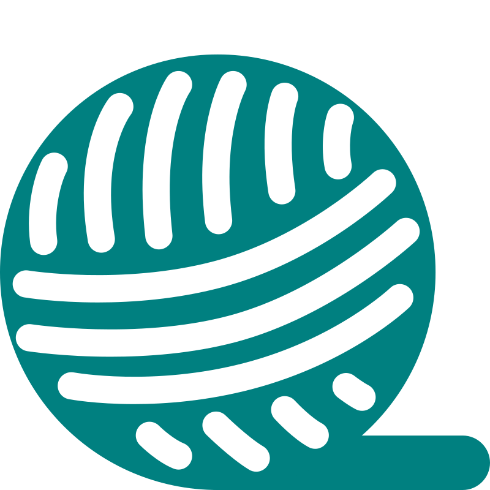

I am a data scientist with a focus on
natural language processing and
data visualization.
I recently completed a
PhD in Computer Science at the University of
Lorraine (Nancy, France) under the supervision of
Maxime Amblard
and
Bruno Guillaume. I worked on semantic modeling, in particular the
development of a
new graph-based semantic representation formalism,
YARN. In the process, I also produced semantically
annotated corpora in the new formalism as well as
two other ones, compared existing formalisms and carried out a
number of
graph rewriting transoformation experiments.
Before that, I completed the
Erasmus Mundus MSc in Language and Communication
Technologies, spending the first year of my studies at University of Lorraine
(Nancy, France) and the second at Saarland University (Saarbrücken,
Germany), and before it a
BSc in Computer Science at the University of
Aberdeen (Aberdeen, United Kingdom). This included an Erasmus year
at the University of Padua (Padua, Italy), during which I discovered
my love for languages, which ultimately brought me onto my
professional path.
Aside from NLP, I am also very interested in
visualizations and the stories they can tell. I am
a strong proponent of learning by doing and find that I learn
best this way, especially when a project is close to my heart. That
is why, aside from honing my Data Science skills in general, I have
spent a portion of the last couple of months working on visulization
projects too. For an example, check out my
interactive map of twin towns in Bulgaria
:)
Three fun facts about me
My favourite linguistic phenomenon is evidentiality (especially
when expressed grammatically)
When I first learnt how to ride a bike, I did so for (what
seemed to 6-year-old me like) 3 hours because I didn't know how
to get off
I got into informatics by accident (but stayed on purpose?)
Teaching English to Italian and Slovenian Children
United World College of the Adriatic, Duino, Italy
Participated in weekly workshops
Prepared teaching materials monthly
TeachingLesson preparation
Interests
Outside of my professional interests, I enjoy a variety of hobbies,
which not only let me express my creativity, but also often inspire
project ideas.

Crochet
I discovered crochet, in particular amigurumi, at the end of 2020
(and not because of the pandemic!) and haven't put my hook down
since.
I am the creator behind
The travel ducks
where I share my amigurumi makes and my first amigurumi designs. I
am currently working on several, scheduled for release in the
second half of 2026.
Creative writing
I used to write (mostly poems) as a child and teenager, then
stopped for a long while...
But hooray! I picked it up again ~2024, this time mostly prose
– I am working on a couple of short story and novel ideas,
mainly aimed at children and young adults. To keep the habit going
and to keep myself accountable, I recently joined the Writing
Community at
The Keller Theatre - Giessen's English Language Theatre.
Reading
Mostly fantasy. Occasionally travelogues, pop science and
classics.
You can check what I've been reading lately on
Goodreads.
Puzzles and riddles
I do enjoy a fun puzzle.
I have taken part in 6 of the last 7 editions of
CS50x Puzzle Day
where my team (via Duca degli Abruzzi) and I have always managed
to solve most or all of the problems.
Definitely my favourite mode of transportation – be it for a
commute or just for fun.
Combining this with my passion for travel and exploring new places
and cultures, I've taken two long-distance cycling trips: ~350 km
in 7 days in Italy in 2023, and ~300km in 5 days in France in
2025.
Board games
Unsuprisingly, I enjoy games that feature puzzle elements or
require the use of logic.